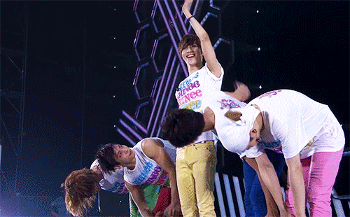

SHINeeWorld!
A place for Shawols
Being a Shawol
- You must always support SHINee!
- You will love and cherish each member respectfully!
- You will not bash any member for any reason.
- Yes, you are allowed to have your own opinions, but it can not contradict with the last two rules.
- You will listen to their music
- You Will watch their music videos.
- You WILL eat, sleep, breathe SHINee
- You will know their Korean, non romanized names.
- When you meet the members of SHINee, you will greet them as "Thank you, oh great 'member's name' for giving me this opportunity to be in your presence."
- You will thank the staff for helping SHINee, and for protecting the members.
- You will thank the member's families for giving them life and helping raise them into whom they are today.
- During award shows, you will support SHINee to the fullest, whilst giving respect to other KPop idols and groups.
- If you can't attend a SHINee concert, a link will be provided to you as a live stream. You must watch the live stream.

Go back